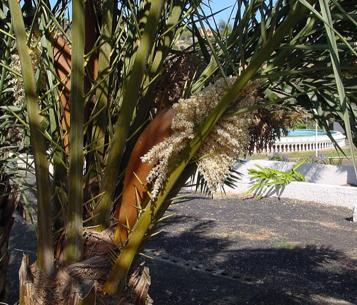

Wer eine Palme im Garten, auf der Terrasse oder am Grundstück hat, kennt vielleicht das ungute Gefühl, wenn die Wedel plötzlich welken oder die Krone seltsam dünner wird. Hinter solchen Veränderungen steckt häufig ein Schädling, der sich in den letzten Jahren rasant ausgebreitet hat: der Palmenzünsler. Was genau hinter diesem Namen steckt, wie Sie einen Befall frühzeitig erkennen und warum schnelles Handeln entscheidend ist, erklären wir in diesem Ratgeber.
Der Palmenzünsler (wissenschaftlich: Paysandisia archon) ist ein großer Nachtfalter, dessen Larven sich tief ins Innere von Palmen fressen und dabei erhebliche Schäden anrichten. Ursprünglich stammt er aus Südamerika, gelangte jedoch über den Pflanzenhandel nach Europa und hat sich vor allem in Spanien, Frankreich, Italien und anderen Mittelmeerländern stark verbreitet. Auch in Deutschland taucht er zunehmend dort auf, wo Palmen als Zierpflanzen in Gärten, Parks oder auf Balkonen gehalten werden.
Die Weibchen legen ihre Eier bevorzugt an der Basis junger Wedel oder in Blattachseln ab. Sind die Larven erst einmal geschlüpft, graben sie sich ins Herzstück der Palme – den sogenannten Vegetationspunkt. Dort fressen sie, weitgehend unsichtbar von außen, über Monate hinweg das lebende Gewebe. Das macht den Palmenzünsler so tückisch: Wenn der Schaden sichtbar wird, ist die Palme oft bereits stark geschädigt oder sogar nicht mehr zu retten.
Ein Palmenzünsler-Befall bleibt lange verborgen, doch es gibt typische Warnsignale, auf die Sie achten sollten. Eines der ersten Zeichen ist das Welken und Vergilben junger Wedel, obwohl die Palme ausreichend gegossen wird. Auch hängende oder abgeknickte Wedel, die eigentlich noch jung sind, deuten auf innere Schäden hin.
Ein weiteres Indiz sind Fraßspuren und sogenanntes Sägemehl – ein feines, hellbräunliches Pulver, das sich an der Stammbasis oder in den Blattachseln ansammelt. Gelegentlich sind auch ausgewachsene Falter zu sehen: Der Palmenzünsler ist mit einer Flügelspannweite von bis zu neun Zentimetern nicht zu übersehen. Seine Vorderflügel zeigen eine grünlich-braune Zeichnung, die Hinterflügel leuchten auffällig orange-rot mit schwarzen Streifen.
Besonders wichtig: Warten Sie nicht ab, wenn Sie einen dieser Hinweise bemerken. Je früher ein Befall erkannt wird, desto größer ist die Chance, die Palme zu erhalten. Bei starkem Befall kann eine Palme innerhalb einer einzigen Vegetationsperiode absterben.
Viele Palmenbsitzer versuchen zunächst, mit handelsüblichen Mitteln aus dem Baumarkt gegenzusteuern – oft ohne dauerhaften Erfolg. Der Grund liegt in der Biologie des Schädlings: Die Larven befinden sich tief im Innern der Pflanze, wo Sprühmittel kaum oder gar nicht hingelangen. Wirkungsvolle Bekämpfung erfordert daher gezielte Methoden, die auf den konkreten Befall und den Entwicklungsstand der Larven abgestimmt sind.
Professionelle Dienstleister setzen auf systemische Behandlungen, die über die Pflanze selbst wirken, sowie auf regelmäßige Kontrollen, um den Bekämpfungserfolg sicherzustellen. Gerade bei größeren Beständen oder schwer zugänglichen Standorten – etwa hohen Palmen in Parkanlagen oder auf Firmengeländen – bieten Drohnengestützte Inspektionen einen entscheidenden Vorteil: Sie ermöglichen eine präzise Beurteilung aus der Luft, ohne dass aufwendige Gerüste oder Hubarbeitsbühnen notwendig sind.
Neben dem Schutz der Pflanze selbst spielt auch die Sicherheit der Anwohner eine Rolle. Stark befallene Palmen können instabil werden und im schlimmsten Fall umstürzen – ein Risiko, das besonders in belebten Außenbereichen, Gärten mit Kindern oder öffentlich zugänglichen Flächen ernst genommen werden sollte.
Wer eine Palme besitzt, sollte nicht erst auf einen Befall warten. Regelmäßige Sichtkontrollen – idealerweise einmal im Monat während der Vegetationsperiode – helfen dabei, erste Anzeichen frühzeitig zu entdecken. Achten Sie besonders auf die jungen Wedel in der Blattkrone: Veränderungen dort sind oft der erste sichtbare Hinweis.
Darüber hinaus empfehlen Experten vorbeugende Behandlungen, vor allem in den Phasen, in denen die Falter aktiv Eier legen. Das ist erfahrungsgemäß ab dem späten Frühjahr bis in den Herbst hinein der Fall. Wer neu erworbene Palmen in den Garten oder auf die Terrasse stellt, sollte diese zunächst sorgfältig auf Larven oder Fraßspuren untersuchen – denn ein Befall kann über den Pflanzenkauf eingeschleppt werden.
Wenn Sie unsicher sind, ob Ihre Palme betroffen ist, oder wenn Sie präventiv handeln möchten, lohnt sich ein professioneller Blick. Insektenblitz.com bietet eine kostenlose Erstberatung an – sprechen Sie uns einfach an, wir helfen Ihnen dabei, Ihre Palme sicher durch die Saison zu bringen.
Kostenlose Erstberatung durch unsere Experten. Wir beurteilen Ihren Fall und erstellen ein individuelles Angebot.
📞 +49 5234 9089310 anrufen